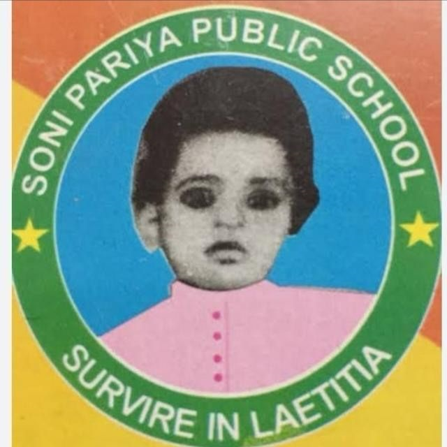
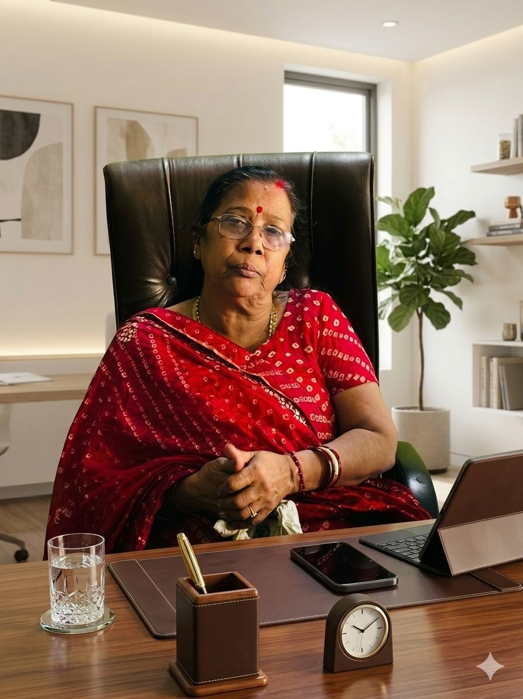
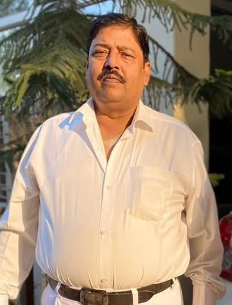

Kannauj | Nursery to 12th
32 Years of Excellence in Education
Soni Pariya Public School, Kannauj is one of the most reputed educational institutions with a legacy of over 32 years of excellence in education. The school is dedicated to providing high-quality education that focuses not only on academic achievements but also on the overall development of every child.
We believe in nurturing young minds with strong values, discipline, and modern knowledge so that they can confidently face future challenges. With experienced faculty, modern infrastructure, and a student-friendly environment, the school ensures holistic development.
Vision: To create confident, responsible, and innovative individuals who contribute positively to society and excel in every field of life.
Mission:

“Our aim is to provide a strong educational foundation with values and discipline.”
We are committed to nurturing students with dedication, care, and modern learning so they can achieve excellence.
— Mrs. Nilima Pariya
(B.Ed, M.Ed, M.Phill)

“Education builds strong character and a successful future.”
Our goal is to provide quality education with discipline and moral values for overall development.
— Dr. Ashish Pariya (Advocate)
(P.hd)
“Innovation and technology are keys to success.”
We integrate AI and robotics with education to prepare students for future challenges.
— Adv. Kartikey Pariya
(B.tech, M.tech (A.I. ansd Robotics), LL.B.)
📞 7007508255
📍 Kannauj, Uttar Pradesh